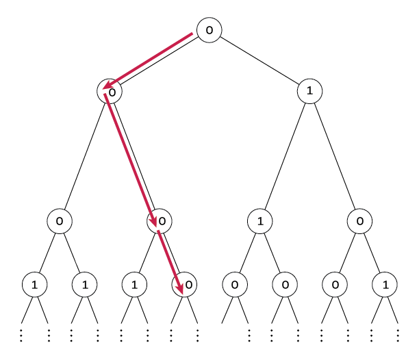

April 2025: Sum One, Somewhere
Puzzle
For a fixed $p$, independently label the nodes of an infinite complete binary tree $0$ with probability $p$, and $1$ otherwise. For what $p$ is there exactly a $1/2$ probability that there exists an infinite path down the tree that sums to at most $1$ (that is, all nodes visited, with the possible exception of one, will be labeled $0$). Find this value of $p$ accurate to $10$ decimal places.
Solution
The intuition behind my approach was to use the symmetry of an infinite binary tree. Once you move along an edge to a given node, you are once again faced with an infinite binary tree and it’s like you started from the beginning again. By that logic, it is sufficient to analyze the probability for the first two levels and we can let recursion handle the rest.
Let:
$$\beta=\text{probability from the root, there is at least one}$$ $$\;\;\;\;\;\;\;\;\;\;\;\;\;\;\text{infinite path with sum }\leq1\;\text{(call it a "good" path)}$$Then the total probability is given by:
$$\beta=\underbrace{p}_{\substack{\text{probability} \\\text{root is 0}}}\underbrace{\left[1-(1-\beta)^2\right]}_{\substack{\text{probability} \\ \text{that at least} \\ \text{one child is root} \\ \text{of subtree with} \\ \text{"good" path}}}+\underbrace{(1-p)}_{\substack{\text{probability}\\\text{root is 1}}}\underbrace{\left[1-(1-q)^2\right]}_{\substack{\text{probability} \\ \text{that at least} \\ \text{one child is root} \\ \text{of subtree whose} \\ \text{nodes are all 0}}}$$Where:
$$q=\text{probability a node is the root of}$$ $$\;\;\;\text{infinite subtree of all 0 nodes}$$And can be expressed as:
\begin{align*} q & =\mathbb{P}(\text{root is 0})\mathbb{P}(\text{root has at least one 0 child}) \\ & = p\left[1-(1-q)^2\right] \end{align*}Solving gives:
$$q(pq-2p+1)=0\implies \begin{cases} q=0 \\ q=\frac{2p-1}{p}=2-\frac 1p \end{cases}$$And notice that:
$$q\geq 0\implies 2-\frac 1p \geq 0\implies 2\geq \frac 1p \implies p\geq \frac 12$$So:
$$\frac 12 \leq p\leq 1$$So now, back to our expression for $\beta$, we substitute in $q=\left(2-\frac 1p\right)$, and we solve for $p$ when we let $\beta=\frac 12$:
$$\frac 12 =p\left[1-\left(1-\frac 12\right)^2\right]+(1-p)\left[1-\left(1-2+\frac 1p\right)^2\right]$$Which arrives at the cubic polynomial:
$$\boxed{3p^3-10p^2+12p-4=0}$$Since the solution calls for a value of $p$ to 10 decimal places, I'm assuming there is no exact solution for $p$ in the above cubic (but it's not like I tried that hard to find one either lol).
Instead, I opted for a Newton-Raphson method to numerically find the root the cubic. The following page shows the implementation.
from decimal import Decimal, getcontext
# Set precision high
getcontext().prec = 50
def f(x):
return 3 * x**3 - 10 * x**2 + 12 * x - 4
def f_prime(x):
return 9 * x**2 - 20 * x + 12
def newton_raphson(x0, tol=Decimal('1e-30'), max_iter=100):
x = x0
for _ in range(max_iter):
fx = f(x)
fpx = f_prime(x)
if fpx == 0:
raise ZeroDivisionError("Derivative is zero.")
x_new = x - fx / fpx
if abs(x_new - x) < tol:
return x_new
x = x_new
raise RuntimeError("Newton-Raphson did not converge.")
# Initial guess near the first root
initial_guess = Decimal('0.5')
root = newton_raphson(initial_guess)
# Compute absolute error
error = abs(f(root))
print("Root:", format(root, '.20f'))
print("Error:", format(error, '.3e'))
Which gives a root of:
$$\boxed{p=\texttt{0.53060357543000532080}}$$